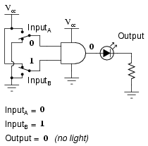
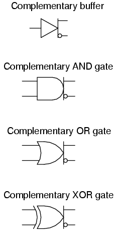
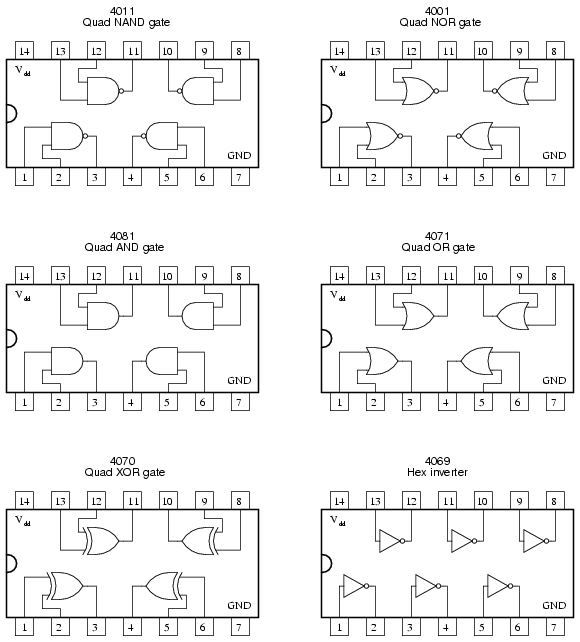

While the binary numeration system is an interesting mathematical abstraction, we haven't yet seen its practical application to electronics. This chapter is devoted to just that: practically applying the concept of binary bits to circuits. What makes binary numeration so important to the application of digital electronics is the ease in which bits may be represented in physical terms. Because a binary bit can only have one of two different values, either 0 or 1, any physical medium capable of switching between two saturated states may be used to represent a bit. Consequently, any physical system capable of representing binary bits is able to represent numerical quantities, and potentially has the ability to manipulate those numbers. This is the basic concept underlying digital computing.
Electronic circuits are physical systems that lend themselves well to the representation of binary numbers. Transistors, when operated at their bias limits, may be in one of two different states: either cutoff (no controlled current) or saturation (maximum controlled current). If a transistor circuit is designed to maximize the probability of falling into either one of these states (and not operating in the linear, or active, mode), it can serve as a physical representation of a binary bit. A voltage signal measured at the output of such a circuit may also serve as a representation of a single bit, a low voltage representing a binary "0" and a (relatively) high voltage representing a binary "1." Note the following transistor circuit:
In this circuit, the transistor is in a state of saturation by virtue of the applied input voltage (5 volts) through the two-position switch. Because its saturated, the transistor drops very little voltage between collector and emitter, resulting in an output voltage of (practically) 0 volts. If we were using this circuit to represent binary bits, we would say that the input signal is a binary "1" and that the output signal is a binary "0." Any voltage close to full supply voltage (measured in reference to ground, of course) is considered a "1" and a lack of voltage is considered a "0." Alternative terms for these voltage levels are high (same as a binary "1") and low (same as a binary "0"). A general term for the representation of a binary bit by a circuit voltage is logic level.
Moving the switch to the other position, we apply a binary "0" to the input and receive a binary "1" at the output:
What we've created here with a single transistor is a circuit generally known as a logic gate, or simply gate. A gate is a special type of amplifier circuit designed to accept and generate voltage signals corresponding to binary 1's and 0's. As such, gates are not intended to be used for amplifying analog signals (voltage signals between 0 and full voltage). Used together, multiple gates may be applied to the task of binary number storage (memory circuits) or manipulation (computing circuits), each gate's output representing one bit of a multi-bit binary number. Just how this is done is a subject for a later chapter. Right now it is important to focus on the operation of individual gates.
The gate shown here with the single transistor is known as an inverter, or NOT gate, because it outputs the exact opposite digital signal as what is input. For convenience, gate circuits are generally represented by their own symbols rather than by their constituent transistors and resistors. The following is the symbol for an inverter:
An alternative symbol for an inverter is shown here:
Notice the triangular shape of the gate symbol, much like that of an operational amplifier. As was stated before, gate circuits actually are amplifiers. The small circle, or "bubble" shown on either the input or output terminal is standard for representing the inversion function. As you might suspect, if we were to remove the bubble from the gate symbol, leaving only a triangle, the resulting symbol would no longer indicate inversion, but merely direct amplification. Such a symbol and such a gate actually do exist, and it is called a buffer, the subject of the next section.
Like an operational amplifier symbol, input and output connections are shown as single wires, the implied reference point for each voltage signal being "ground." In digital gate circuits, ground is almost always the negative connection of a single voltage source (power supply). Dual, or "split," power supplies are seldom used in gate circuitry. Because gate circuits are amplifiers, they require a source of power to operate. Like operational amplifiers, the power supply connections for digital gates are often omitted from the symbol for simplicity's sake. If we were to show all the necessary connections needed for operating this gate, the schematic would look something like this:
Power supply conductors are rarely shown in gate circuit schematics, even if the power supply connections at each gate are. Minimizing lines in our schematic, we get this:
"Vcc" stands for the constant voltage supplied to the collector of a bipolar junction transistor circuit, in reference to ground. Those points in a gate circuit marked by the label "Vcc" are all connected to the same point, and that point is the positive terminal of a DC voltage source, usually 5 volts.
As we will see in other sections of this chapter, there are quite a few different types of logic gates, most of which have multiple input terminals for accepting more than one signal. The output of any gate is dependent on the state of its input(s) and its logical function.
One common way to express the particular function of a gate circuit is called a truth table. Truth tables show all combinations of input conditions in terms of logic level states (either "high" or "low," "1" or "0," for each input terminal of the gate), along with the corresponding output logic level, either "high" or "low." For the inverter, or NOT, circuit just illustrated, the truth table is very simple indeed:
Truth tables for more complex gates are, of course, larger than the one shown for the NOT gate. A gate's truth table must have as many rows as there are possibilities for unique input combinations. For a single-input gate like the NOT gate, there are only two possibilities, 0 and 1. For a two input gate, there are four possibilities (00, 01, 10, and 11), and thus four rows to the corresponding truth table. For a three-input gate, there are eight possibilities (000, 001, 010, 011, 100, 101, 110, and 111), and thus a truth table with eight rows are needed. The mathematically inclined will realize that the number of truth table rows needed for a gate is equal to 2 raised to the power of the number of input terminals.
The single-transistor inverter circuit illustrated earlier is actually too crude to be of practical use as a gate. Real inverter circuits contain more than one transistor to maximize voltage gain (so as to ensure that the final output transistor is either in full cutoff or full saturation), and other components designed to reduce the chance of accidental damage.
Shown here is a schematic diagram for a real inverter circuit, complete with all necessary components for efficient and reliable operation:
This circuit is composed exclusively of resistors, diodes and bipolar transistors. Bear in mind that other circuit designs are capable of performing the NOT gate function, including designs substituting field-effect transistors for bipolar (discussed later in this chapter).
Let's analyze this circuit for the condition where the input is "high," or in a binary "1" state. We can simulate this by showing the input terminal connected to Vcc through a switch:
In this case, diode D1 will be reverse-biased, and therefore not conduct any current. In fact, the only purpose for having D1 in the circuit is to prevent transistor damage in the case of a negative voltage being impressed on the input (a voltage that is negative, rather than positive, with respect to ground). With no voltage between the base and emitter of transistor Q1, we would expect no current through it, either. However, as strange as it may seem, transistor Q1 is not being used as is customary for a transistor. In reality, Q1 is being used in this circuit as nothing more than a back-to-back pair of diodes. The following schematic shows the real function of Q1:

The purpose of these diodes is to "steer" current to or away from the base of transistor Q2, depending on the logic level of the input. Exactly how these two diodes are able to "steer" current isn't exactly obvious at first inspection, so a short example may be necessary for understanding. Suppose we had the following diode/resistor circuit, representing the base-emitter junctions of transistors Q2 and Q4 as single diodes, stripping away all other portions of the circuit so that we can concentrate on the current "steered" through the two back-to-back diodes:
With the input switch in the "up" position (connected to Vcc), it should be obvious that there will be no current through the left steering diode of Q1, because there isn't any voltage in the switch-diode-R1-switch loop to motivate electrons to flow. However, there will be current through the right steering diode of Q1, as well as through Q2's base-emitter diode junction and Q4's base-emitter diode junction:
This tells us that in the real gate circuit, transistors Q2 and Q4 will have base current, which will turn them on to conduct collector current. The total voltage dropped between the base of Q1 (the node joining the two back-to-back steering diodes) and ground will be about 2.1 volts, equal to the combined voltage drops of three PN junctions: the right steering diode, Q2's base-emitter diode, and Q4's base-emitter diode.
Now, let's move the input switch to the "down" position and see what happens:
If we were to measure current in this circuit, we would find that all of the current goes through the left steering diode of Q1 and none of it through the right diode. Why is this? It still appears as though there is a complete path for current through Q4's diode, Q2's diode, the right diode of the pair, and R1, so why will there be no current through that path?
Remember that PN junction diodes are very nonlinear devices: they do not even begin to conduct current until the forward voltage applied across them reaches a certain minimum quantity, approximately 0.7 volts for silicon and 0.3 volts for germanium. And then when they begin to conduct current, they will not drop substantially more than 0.7 volts. When the switch in this circuit is in the "down" position, the left diode of the steering diode pair is fully conducting, and so it drops about 0.7 volts across it and no more.
Recall that with the switch in the "up" position (transistors Q2 and Q4 conducting), there was about 2.1 volts dropped between those same two points (Q1's base and ground), which also happens to be the minimum voltage necessary to forward-bias three series-connected silicon PN junctions into a state of conduction. The 0.7 volts provided by the left diode's forward voltage drop is simply insufficient to allow any electron flow through the series string of the right diode, Q2's diode, and the R3//Q4 diode parallel subcircuit, and so no electrons flow through that path. With no current through the bases of either transistor Q2 or Q4, neither one will be able to conduct collector current: transistors Q2 and Q4 will both be in a state of cutoff.
Consequently, this circuit configuration allows 100 percent switching of Q2 base current (and therefore control over the rest of the gate circuit, including voltage at the output) by diversion of current through the left steering diode.
In the case of our example gate circuit, the input is held "high" by the switch (connected to Vcc), making the left steering diode (zero voltage dropped across it). However, the right steering diode is conducting current through the base of Q2, through resistor R1:
With base current provided, transistor Q2 will be turned "on." More specifically, it will be saturated by virtue of the more-than-adequate current allowed by R1 through the base. With Q2 saturated, resistor R3 will be dropping enough voltage to forward-bias the base-emitter junction of transistor Q4, thus saturating it as well:
With Q4 saturated, the output terminal will be almost directly shorted to ground, leaving the output terminal at a voltage (in reference to ground) of almost 0 volts, or a binary "0" ("low") logic level. Due to the presence of diode D2, there will not be enough voltage between the base of Q3 and its emitter to turn it on, so it remains in cutoff.
Let's see now what happens if we reverse the input's logic level to a binary "0" by actuating the input switch:
Now there will be current through the left steering diode of Q1 and no current through the right steering diode. This eliminates current through the base of Q2, thus turning it off. With Q2 off, there is no longer a path for Q4 base current, so Q4 goes into cutoff as well. Q3, on the other hand, now has sufficient voltage dropped between its base and ground to forward-bias its base-emitter junction and saturate it, thus raising the output terminal voltage to a "high" state. In actuality, the output voltage will be somewhere around 4 volts depending on the degree of saturation and any load current, but still high enough to be considered a "high" (1) logic level.
With this, our simulation of the inverter circuit is complete: a "1" in gives a "0" out, and vice versa.
The astute observer will note that this inverter circuit's input will assume a "high" state of left floating (not connected to either Vcc or ground). With the input terminal left unconnected, there will be no current through the left steering diode of Q1, leaving all of R1's current to go through Q2's base, thus saturating Q2 and driving the circuit output to a "low" state:
The tendency for such a circuit to assume a high input state if left floating is one shared by all gate circuits based on this type of design, known as Transistor-to-Transistor Logic, or TTL. This characteristic may be taken advantage of in simplifying the design of a gate's output circuitry, knowing that the outputs of gates typically drive the inputs of other gates. If the input of a TTL gate circuit assumes a high state when floating, then the output of any gate driving a TTL input need only provide a path to ground for a low state and be floating for a high state. This concept may require further elaboration for full understanding, so I will explore it in detail here.
A gate circuit as we have just analyzed has the ability to handle output current in two directions: in and out. Technically, this is known as sourcing and sinking current, respectively. When the gate output is high, there is continuity from the output terminal to Vcc through the top output transistor (Q3), allowing electrons to flow from ground, through a load, into the gate's output terminal, through the emitter of Q3, and eventually up to the Vcc power terminal (positive side of the DC power supply):
To simplify this concept, we may show the output of a gate circuit as being a double-throw switch, capable of connecting the output terminal either to Vcc or ground, depending on its state. For a gate outputting a "high" logic level, the combination of Q3 saturated and Q4 cutoff is analogous to a double-throw switch in the "Vcc" position, providing a path for current through a grounded load:
Please note that this two-position switch shown inside the gate symbol is representative of transistors Q3 and Q4 alternately connecting the output terminal to Vcc or ground, not of the switch previously shown sending an input signal to the gate!
Conversely, when a gate circuit is outputting a "low" logic level to a load, it is analogous to the double-throw switch being set in the "ground" position. Current will then be going the other way if the load resistance connects to Vcc: from ground, through the emitter of Q4, out the output terminal, through the load resistance, and back to Vcc. In this condition, the gate is said to be sinking current:
The combination of Q3 and Q4 working as a "push-pull" transistor pair (otherwise known as a totem pole output) has the ability to either source current (draw in current to Vcc) or sink current (output current from ground) to a load. However, a standard TTL gate input never needs current to be sourced, only sunk. That is, since a TTL gate input naturally assumes a high state if left floating, any gate output driving a TTL input need only sink current to provide a "0" or "low" input, and need not source current to provide a "1" or a "high" logic level at the input of the receiving gate:
This means we have the option of simplifying the output stage of a gate circuit so as to eliminate Q3 altogether. The result is known as an open-collector output:
To designate open-collector output circuitry within a standard gate symbol, a special marker is used. Shown here is the symbol for an inverter gate with open-collector output:
Please keep in mind that the "high" default condition of a floating gate input is only true for TTL circuitry, and not necessarily for other types, especially for logic gates constructed of field-effect transistors.
If we were to connect two inverter gates together so that the output of one fed into the input of another, the two inversion functions would "cancel" each other out so that there would be no inversion from input to final output:
While this may seem like a pointless thing to do, it does have practical application. Remember that gate circuits are signal amplifiers, regardless of what logic function they may perform. A weak signal source (one that is not capable of sourcing or sinking very much current to a load) may be boosted by means of two inverters like the pair shown in the previous illustration. The logic level is unchanged, but the full current-sourcing or -sinking capabilities of the final inverter are available to drive a load resistance if needed.
For this purpose, a special logic gate called a buffer is manufactured to perform the same function as two inverters. Its symbol is simply a triangle, with no inverting "bubble" on the output terminal:
The internal schematic diagram for a typical open-collector buffer is not much different from that of a simple inverter: only one more common-emitter transistor stage is added to re-invert the output signal.
Let's analyze this circuit for two conditions: an input logic level of "1" and an input logic level of "0." First, a "high" (1) input:
As before with the inverter circuit, the "high" input causes no conduction through the left steering diode of Q1 (emitter-to-base PN junction). All of R1's current goes through the base of transistor Q2, saturating it:
Having Q2 saturated causes Q3 to be saturated as well, resulting in very little voltage dropped between the base and emitter of the final output transistor Q4. Thus, Q4 will be in cutoff mode, conducting no current. The output terminal will be floating (neither connected to ground nor Vcc), and this will be equivalent to a "high" state on the input of the next TTL gate that this one feeds in to. Thus, a "high" input gives a "high" output.
With a "low" input signal (input terminal grounded), the analysis looks something like this:
All of R1's current is now diverted through the input switch, thus eliminating base current through Q2. This forces transistor Q2 into cutoff so that no base current goes through Q3 either. With Q3 cutoff as well, Q4 is will be saturated by the current through resistor R4, thus connecting the output terminal to ground, making it a "low" logic level. Thus, a "low" input gives a "low" output.
The schematic diagram for a buffer circuit with totem pole output transistors is a bit more complex, but the basic principles, and certainly the truth table, are the same as for the open-collector circuit:
Inverters and buffers exhaust the possibilities for single-input gate circuits. What more can be done with a single logic signal but to buffer it or invert it? To explore more logic gate possibilities, we must add more input terminals to the circuit(s).
Adding more input terminals to a logic gate increases the number of input state possibilities. With a single-input gate such as the inverter or buffer, there can only be two possible input states: either the input is "high" (1) or it is "low" (0). As was mentioned previously in this chapter, a two input gate has four possibilities (00, 01, 10, and 11). A three-input gate has eight possibilities (000, 001, 010, 011, 100, 101, 110, and 111) for input states. The number of possible input states is equal to two to the power of the number of inputs:
This increase in the number of possible input states obviously allows for more complex gate behavior. Now, instead of merely inverting or amplifying (buffering) a single "high" or "low" logic level, the output of the gate will be determined by whatever combination of 1's and 0's is present at the input terminals.
Since so many combinations are possible with just a few input terminals, there are many different types of multiple-input gates, unlike single-input gates which can only be inverters or buffers. Each basic gate type will be presented in this section, showing its standard symbol, truth table, and practical operation. The actual TTL circuitry of these different gates will be explored in subsequent sections.
One of the easiest multiple-input gates to understand is the AND gate, so-called because the output of this gate will be "high" (1) if and only if all inputs (first input and the second input and . . .) are "high" (1). If any input(s) are "low" (0), the output is guaranteed to be in a "low" state as well.
In case you might have been wondering, AND gates are made with more than three inputs, but this is less common than the simple two-input variety.
A two-input AND gate's truth table looks like this:

What this truth table means in practical terms is shown in the following sequence of illustrations, with the 2-input AND gate subjected to all possibilities of input logic levels. An LED (Light-Emitting Diode) provides visual indication of the output logic level:

It is only with all inputs raised to "high" logic levels that the AND gate's output goes "high," thus energizing the LED for only one out of the four input combination states.
A variation on the idea of the AND gate is called the NAND gate. The word "NAND" is a verbal contraction of the words NOT and AND. Essentially, a NAND gate behaves the same as an AND gate with a NOT (inverter) gate connected to the output terminal. To symbolize this output signal inversion, the NAND gate symbol has a bubble on the output line. The truth table for a NAND gate is as one might expect, exactly opposite as that of an AND gate:
As with AND gates, NAND gates are made with more than two inputs. In such cases, the same general principle applies: the output will be "low" (0) if and only if all inputs are "high" (1). If any input is "low" (0), the output will go "high" (1).
Our next gate to investigate is the OR gate, so-called because the output of this gate will be "high" (1) if any of the inputs (first input or the second input or . . .) are "high" (1). The output of an OR gate goes "low" (0) if and only if all inputs are "low" (0).
A two-input OR gate's truth table looks like this:
The following sequence of illustrations demonstrates the OR gate's function, with the 2-inputs experiencing all possible logic levels. An LED (Light-Emitting Diode) provides visual indication of the gate's output logic level:
A condition of any input being raised to a "high" logic level makes the OR gate's output go "high," thus energizing the LED for three out of the four input combination states.
As you might have suspected, the NOR gate is an OR gate with its output inverted, just like a NAND gate is an AND gate with an inverted output.
NOR gates, like all the other multiple-input gates seen thus far, can be manufactured with more than two inputs. Still, the same logical principle applies: the output goes "low" (0) if any of the inputs are made "high" (1). The output is "high" (1) only when all inputs are "low" (0).
A Negative-AND gate functions the same as an AND gate with all its inputs inverted (connected through NOT gates). In keeping with standard gate symbol convention, these inverted inputs are signified by bubbles. Contrary to most peoples' first instinct, the logical behavior of a Negative-AND gate is not the same as a NAND gate. Its truth table, actually, is identical to a NOR gate:

Following the same pattern, a Negative-OR gate functions the same as an OR gate with all its inputs inverted. In keeping with standard gate symbol convention, these inverted inputs are signified by bubbles. The behavior and truth table of a Negative-OR gate is the same as for a NAND gate:
The last six gate types are all fairly direct variations on three basic functions: AND, OR, and NOT. The Exclusive-OR gate, however, is something quite different.
Exclusive-OR gates output a "high" (1) logic level if the inputs are at different logic levels, either 0 and 1 or 1 and 0. Conversely, they output a "low" (0) logic level if the inputs are at the same logic levels. The Exclusive-OR (sometimes called XOR) gate has both a symbol and a truth table pattern that is unique:
There are equivalent circuits for an Exclusive-OR gate made up of AND, OR, and NOT gates, just as there were for NAND, NOR, and the negative-input gates. A rather direct approach to simulating an Exclusive-OR gate is to start with a regular OR gate, then add additional gates to inhibit the output from going "high" (1) when both inputs are "high" (1):
In this circuit, the final AND gate acts as a buffer for the output of the OR gate whenever the NAND gate's output is high, which it is for the first three input state combinations (00, 01, and 10). However, when both inputs are "high" (1), the NAND gate outputs a "low" (0) logic level, which forces the final AND gate to produce a "low" (0) output.
Another equivalent circuit for the Exclusive-OR gate uses a strategy of two AND gates with inverters, set up to generate "high" (1) outputs for input conditions 01 and 10. A final OR gate then allows either of the AND gates' "high" outputs to create a final "high" output:
Exclusive-OR gates are very useful for circuits where two or more binary numbers are to be compared bit-for-bit, and also for error detection (parity check) and code conversion (binary to Grey and vice versa).
Finally, our last gate for analysis is the Exclusive-NOR gate, otherwise known as the XNOR gate. It is equivalent to an Exclusive-OR gate with an inverted output. The truth table for this gate is exactly opposite as for the Exclusive-OR gate:
As indicated by the truth table, the purpose of an Exclusive-NOR gate is to output a "high" (1) logic level whenever both inputs are at the same logic levels (either 00 or 11).
Suppose we altered our basic open-collector inverter circuit, adding a second input terminal just like the first:
This schematic illustrates a real circuit, but it isn't called a "two-input inverter." Through analysis we will discover what this circuit's logic function is and correspondingly what it should be designated as.
Just as in the case of the inverter and buffer, the "steering" diode cluster marked "Q1" is actually formed like a transistor, even though it isn't used in any amplifying capacity. Unfortunately, a simple NPN transistor structure is inadequate to simulate the three PN junctions necessary in this diode network, so a different transistor (and symbol) is needed. This transistor has one collector, one base, and two emitters, and in the circuit it looks like this:
In the single-input (inverter) circuit, grounding the input resulted in an output that assumed the "high" (1) state. In the case of the open-collector output configuration, this "high" state was simply "floating." Allowing the input to float (or be connected to Vcc) resulted in the output becoming grounded, which is the "low" or 0 state. Thus, a 1 in resulted in a 0 out, and vice versa.
Since this circuit bears so much resemblance to the simple inverter circuit, the only difference being a second input terminal connected in the same way to the base of transistor Q2, we can say that each of the inputs will have the same effect on the output. Namely, if either of the inputs are grounded, transistor Q2 will be forced into a condition of cutoff, thus turning Q3 off and floating the output (output goes "high"). The following series of illustrations shows this for three input states (00, 01, and 10):
In any case where there is a grounded ("low") input, the output is guaranteed to be floating ("high"). Conversely, the only time the output will ever go "low" is if transistor Q3 turns on, which means transistor Q2 must be turned on (saturated), which means neither input can be diverting R1 current away from the base of Q2. The only condition that will satisfy this requirement is when both inputs are "high" (1):
Collecting and tabulating these results into a truth table, we see that the pattern matches that of the NAND gate:

In the earlier section on NAND gates, this type of gate was created by taking an AND gate and increasing its complexity by adding an inverter (NOT gate) to the output. However, when we examine this circuit, we see that the NAND function is actually the simplest, most natural mode of operation for this TTL design. To create an AND function using TTL circuitry, we need to increase the complexity of this circuit by adding an inverter stage to the output, just like we had to add an additional transistor stage to the TTL inverter circuit to turn it into a buffer:
The truth table and equivalent gate circuit (an inverted-output NAND gate) are shown here:
Of course, both NAND and AND gate circuits may be designed with totem-pole output stages rather than open-collector. I am opting to show the open-collector versions for the sake of simplicity.
Let's examine the following TTL circuit and analyze its operation:
Transistors Q1 and Q2 are both arranged in the same manner that we've seen for transistor Q1 in all the other TTL circuits. Rather than functioning as amplifiers, Q1 and Q2 are both being used as two-diode "steering" networks. We may replace Q1 and Q2 with diode sets to help illustrate:

If input A is left floating (or connected to Vcc), current will go through the base of transistor Q3, saturating it. If input A is grounded, that current is diverted away from Q3's base through the left steering diode of "Q1," thus forcing Q3 into cutoff. The same can be said for input B and transistor Q4: the logic level of input B determines Q4's conduction: either saturated or cutoff.
Notice how transistors Q3 and Q4 are paralleled at their collector and emitter terminals. In essence, these two transistors are acting as paralleled switches, allowing current through resistors R3 and R4 according to the logic levels of inputs A and B. If any input is at a "high" (1) level, then at least one of the two transistors (Q3 and/or Q4) will be saturated, allowing current through resistors R3 and R4, and turning on the final output transistor Q5 for a "low" (0) logic level output. The only way the output of this circuit can ever assume a "high" (1) state is if both Q3 and Q4 are cutoff, which means both inputs would have to be grounded, or "low" (0).
This circuit's truth table, then, is equivalent to that of the NOR gate:
In order to turn this NOR gate circuit into an OR gate, we would have to invert the output logic level with another transistor stage, just like we did with the NAND-to-AND gate example:
The truth table and equivalent gate circuit (an inverted-output NOR gate) are shown here:
Of course, totem-pole output stages are also possible in both NOR and OR TTL logic circuits.
Up until this point, our analysis of transistor logic circuits has been limited to the TTL design paradigm, whereby bipolar transistors are used, and the general strategy of floating inputs being equivalent to "high" (connected to Vcc) inputs -- and correspondingly, the allowance of "open-collector" output stages -- is maintained. This, however, is not the only way we can build logic gates.
Field-effect transistors, particularly the insulated-gate variety, may be used in the design of gate circuits. Being voltage-controlled rather than current-controlled devices, IGFETs tend to allow very simple circuit designs. Take for instance, the following inverter circuit built using P- and N-channel IGFETs:
Notice the "Vdd" label on the positive power supply terminal. This label follows the same convention as "Vcc" in TTL circuits: it stands for the constant voltage applied to the drain of a field effect transistor, in reference to ground.
Let's connect this gate circuit to a power source and input switch, and examine its operation. Please note that these IGFET transistors are E-type (Enhancement-mode), and so are normally-off devices. It takes an applied voltage between gate and drain (actually, between gate and substrate) of the correct polarity to bias them on.
The upper transistor is a P-channel IGFET. When the channel (substrate) is made more positive than the gate (gate negative in reference to the substrate), the channel is enhanced and current is allowed between source and drain. So, in the above illustration, the top transistor is turned on.
The lower transistor, having zero voltage between gate and substrate (source), is in its normal mode: off. Thus, the action of these two transistors are such that the output terminal of the gate circuit has a solid connection to Vdd and a very high resistance connection to ground. This makes the output "high" (1) for the "low" (0) state of the input.
Next, we'll move the input switch to its other position and see what happens:
Now the lower transistor (N-channel) is saturated because it has sufficient voltage of the correct polarity applied between gate and substrate (channel) to turn it on (positive on gate, negative on the channel). The upper transistor, having zero voltage applied between its gate and substrate, is in its normal mode: off. Thus, the output of this gate circuit is now "low" (0). Clearly, this circuit exhibits the behavior of an inverter, or NOT gate.
Using field-effect transistors instead of bipolar transistors has greatly simplified the design of the inverter gate. Note that the output of this gate never floats as is the case with the simplest TTL circuit: it has a natural "totem-pole" configuration, capable of both sourcing and sinking load current. Key to this gate circuit's elegant design is the complementary use of both P- and N-channel IGFETs. Since IGFETs are more commonly known as MOSFETs (Metal-Oxide-Semiconductor Field Effect Transistor), and this circuit uses both P- and N-channel transistors together, the general classification given to gate circuits like this one is CMOS: Complementary Metal Oxide Semiconductor.
CMOS circuits aren't plagued by the inherent nonlinearities of the field-effect transistors, because as digital circuits their transistors always operate in either the saturated or cutoff modes and never in the active mode. Their inputs are, however, sensitive to high voltages generated by electrostatic (static electricity) sources, and may even be activated into "high" (1) or "low" (0) states by spurious voltage sources if left floating. For this reason, it is inadvisable to allow a CMOS logic gate input to float under any circumstances. Please note that this is very different from the behavior of a TTL gate where a floating input was safely interpreted as a "high" (1) logic level.
This may cause a problem if the input to a CMOS logic gate is driven by a single-throw switch, where one state has the input solidly connected to either Vdd or ground and the other state has the input floating (not connected to anything):
Also, this problem arises if a CMOS gate input is being driven by an open-collector TTL gate. Because such a TTL gate's output floats when it goes "high" (1), the CMOS gate input will be left in an uncertain state:
Fortunately, there is an easy solution to this dilemma, one that is used frequently in CMOS logic circuitry. Whenever a single-throw switch (or any other sort of gate output incapable of both sourcing and sinking current) is being used to drive a CMOS input, a resistor connected to either Vdd or ground may be used to provide a stable logic level for the state in which the driving device's output is floating. This resistor's value is not critical: 10 kΩ is usually sufficient. When used to provide a "high" (1) logic level in the event of a floating signal source, this resistor is known as a pullup resistor:
When such a resistor is used to provide a "low" (0) logic level in the event of a floating signal source, it is known as a pulldown resistor. Again, the value for a pulldown resistor is not critical:
Because open-collector TTL outputs always sink, never source, current, pullup resistors are necessary when interfacing such an output to a CMOS gate input:
Although the CMOS gates used in the preceding examples were all inverters (single-input), the same principle of pullup and pulldown resistors applies to multiple-input CMOS gates. Of course, a separate pullup or pulldown resistor will be required for each gate input:

This brings us to the next question: how do we design multiple-input CMOS gates such as AND, NAND, OR, and NOR? Not surprisingly, the answer(s) to this question reveal a simplicity of design much like that of the CMOS inverter over its TTL equivalent.
For example, here is the schematic diagram for a CMOS NAND gate:
Notice how transistors Q1 and Q3 resemble the series-connected complementary pair from the inverter circuit. Both are controlled by the same input signal (input A), the upper transistor turning off and the lower transistor turning on when the input is "high" (1), and vice versa. Notice also how transistors Q2 and Q4 are similarly controlled by the same input signal (input B), and how they will also exhibit the same on/off behavior for the same input logic levels. The upper transistors of both pairs (Q1 and Q2) have their source and drain terminals paralleled, while the lower transistors (Q3 and Q4) are series-connected. What this means is that the output will go "high" (1) if either top transistor saturates, and will go "low" (0) only if both lower transistors saturate. The following sequence of illustrations shows the behavior of this NAND gate for all four possibilities of input logic levels (00, 01, 10, and 11):
As with the TTL NAND gate, the CMOS NAND gate circuit may be used as the starting point for the creation of an AND gate. All that needs to be added is another stage of transistors to invert the output signal:
A CMOS NOR gate circuit uses four MOSFETs just like the NAND gate, except that its transistors are differently arranged. Instead of two paralleled sourcing (upper) transistors connected to Vdd and two series-connected sinking (lower) transistors connected to ground, the NOR gate uses two series-connected sourcing transistors and two parallel-connected sinking transistors like this:
As with the NAND gate, transistors Q1 and Q3 work as a complementary pair, as do transistors Q2 and Q4. Each pair is controlled by a single input signal. If either input A or input B are "high" (1), at least one of the lower transistors (Q3 or Q4) will be saturated, thus making the output "low" (0). Only in the event of both inputs being "low" (0) will both lower transistors be in cutoff mode and both upper transistors be saturated, the conditions necessary for the output to go "high" (1). This behavior, of course, defines the NOR logic function.
The OR function may be built up from the basic NOR gate with the addition of an inverter stage on the output:
Since it appears that any gate possible to construct using TTL technology can be duplicated in CMOS, why do these two "families" of logic design still coexist? The answer is that both TTL and CMOS have their own unique advantages.
First and foremost on the list of comparisons between TTL and CMOS is the issue of power consumption. In this measure of performance, CMOS is the unchallenged victor. Because the complementary P- and N-channel MOSFET pairs of a CMOS gate circuit are (ideally) never conducting at the same time, there is little or no current drawn by the circuit from the Vdd power supply except for what current is necessary to source current to a load. TTL, on the other hand, cannot function without some current drawn at all times, due to the biasing requirements of the bipolar transistors from which it is made.
There is a caveat to this advantage, though. While the power dissipation of a TTL gate remains rather constant regardless of its operating state(s), a CMOS gate dissipates more power as the frequency of its input signal(s) rises. If a CMOS gate is operated in a static (unchanging) condition, it dissipates zero power (ideally). However, CMOS gate circuits draw transient current during every output state switch from "low" to "high" and vice versa. So, the more often a CMOS gate switches modes, the more often it will draw current from the Vdd supply, hence greater power dissipation at greater frequencies.
A CMOS gate also draws much less current from a driving gate output than a TTL gate because MOSFETs are voltage-controlled, not current-controlled, devices. This means that one gate can drive many more CMOS inputs than TTL inputs. The measure of how many gate inputs a single gate output can drive is called fanout.
Another advantage that CMOS gate designs enjoy over TTL is a much wider allowable range of power supply voltages. Whereas TTL gates are restricted to power supply (Vcc) voltages between 4.75 and 5.25 volts, CMOS gates are typically able to operate on any voltage between 3 and 15 volts! The reason behind this disparity in power supply voltages is the respective bias requirements of MOSFET versus bipolar junction transistors. MOSFETs are controlled exclusively by gate voltage (with respect to substrate), whereas BJTs are current-controlled devices. TTL gate circuit resistances are precisely calculated for proper bias currents assuming a 5 volt regulated power supply. Any significant variations in that power supply voltage will result in the transistor bias currents being incorrect, which then results in unreliable (unpredictable) operation. The only effect that variations in power supply voltage have on a CMOS gate is the voltage definition of a "high" (1) state. For a CMOS gate operating at 15 volts of power supply voltage (Vdd), an input signal must be close to 15 volts in order to be considered "high" (1). The voltage threshold for a "low" (0) signal remains the same: near 0 volts.
One decided disadvantage of CMOS is slow speed, as compared to TTL. The input capacitances of a CMOS gate are much, much greater than that of a comparable TTL gate -- owing to the use of MOSFETs rather than BJTs -- and so a CMOS gate will be slower to respond to a signal transition (low-to-high or vice versa) than a TTL gate, all other factors being equal. The RC time constant formed by circuit resistances and the input capacitance of the gate tend to impede the fast rise- and fall-times of a digital logic level, thereby degrading high-frequency performance.
A strategy for minimizing this inherent disadvantage of CMOS gate circuitry is to "buffer" the output signal with additional transistor stages, to increase the overall voltage gain of the device. This provides a faster-transitioning output voltage (high-to-low or low-to-high) for an input voltage slowly changing from one logic state to another. Consider this example, of an "unbuffered" NOR gate versus a "buffered," or B-series, NOR gate:
In essence, the B-series design enhancement adds two inverters to the output of a simple NOR circuit. This serves no purpose as far as digital logic is concerned, since two cascaded inverters simply cancel:
However, adding these inverter stages to the circuit does serve the purpose of increasing overall voltage gain, making the output more sensitive to changes in input state, working to overcome the inherent slowness caused by CMOS gate input capacitance.
It is sometimes desirable to have a logic gate that provides both inverted and non-inverted outputs. For example, a single-input gate that is both a buffer and an inverter, with a separate output terminal for each function. Or, a two-input gate that provides both the AND and the NAND functions in a single circuit. Such gates do exist and they are referred to as complementary output gates.
The general symbology for such a gate is the basic gate figure with a bar and two output lines protruding from it. An array of complementary gate symbols is shown in the following illustration:

Complementary gates are especially useful in "crowded" circuits where there may not be enough physical room to mount the additional integrated circuit chips necessary to provide both inverted and noninverted outputs using standard gates and additional inverters. They are also useful in applications where a complementary output is necessary from a gate, but the addition of an inverter would introduce an unwanted time lag in the inverted output relative to the noninverted output. The internal circuitry of complemented gates is such that both inverted and noninverted outputs change state at almost exactly the same time:

Another type of special gate output is called tristate, because it has the ability to provide three different output modes: current sinking ("low" logic level), current sourcing ("high"), and floating ("high-Z," or high-impedance). Tristate outputs are usually found as an optional feature on buffer gates. Such gates require an extra input terminal to control the "high-Z" mode, and this input is usually called the enable.
With the enable input held "high" (1), the buffer acts like an ordinary buffer with a totem pole output stage: it is capable of both sourcing and sinking current. However, the output terminal floats (goes into "high-Z" mode) if ever the enable input is grounded ("low"), regardless of the data signal's logic level. In other words, making the enable input terminal "low" (0) effectively disconnects the gate from whatever its output is wired to so that it can no longer have any effect.
Tristate buffers are marked in schematic diagrams by a triangle character within the gate symbol like this:
Tristate buffers are also made with inverted enable inputs. Such a gate acts normal when the enable input is "low" (0) and goes into high-Z output mode when the enable input is "high" (1):
One special type of gate known as the bilateral switch uses gate-controlled MOSFET transistors acting as on/off switches to switch electrical signals, analog or digital. The "on" resistance of such a switch is in the range of several hundred ohms, the "off" resistance being in the range of several hundred mega-ohms.
Bilateral switches appear in schematics as SPST (Single-Pole, Single-Throw) switches inside of rectangular boxes, with a control terminal on one of the box's long sides:
A bilateral switch might be best envisioned as a solid-state (semiconductor) version of an electromechanical relay: a signal-actuated switch contact that may be used to conduct virtually any type of electric signal. Of course, being solid-state, the bilateral switch has none of the undesirable characteristics of electromechanical relays, such as contact "bouncing," arcing, slow speed, or susceptibility to mechanical vibration. Conversely, though, they are rather limited in their current-carrying ability. Additionally, the signal conducted by the "contact" must not exceed the power supply "rail" voltages powering the bilateral switch circuit.
Four bilateral switches are packaged inside the popular model "4066" integrated circuit:
NAND and NOR gates possess a special property: they are universal. That is, given enough gates, either type of gate is able to mimic the operation of any other gate type. For example, it is possible to build a circuit exhibiting the OR function using three interconnected NAND gates. The ability for a single gate type to be able to mimic any other gate type is one enjoyed only by the NAND and the NOR. In fact, digital control systems have been designed around nothing but either NAND or NOR gates, all the necessary logic functions being derived from collections of interconnected NANDs or NORs.
As proof of this property, this section will be divided into subsections showing how all the basic gate types may be formed using only NANDs or only NORs.
As you can see, there are two ways to use a NAND gate as an inverter, and two ways to use a NOR gate as an inverter. Either method works, although connecting TTL inputs together increases the amount of current loading to the driving gate. For CMOS gates, common input terminals decreases the switching speed of the gate due to increased input capacitance.
Inverters are the fundamental tool for transforming one type of logic function into another, and so there will be many inverters shown in the illustrations to follow. In those diagrams, I will only show one method of inversion, and that will be where the unused NAND gate input is connected to +V (either Vcc or Vdd, depending on whether the circuit is TTL or CMOS) and where the unused input for the NOR gate is connected to ground. Bear in mind that the other inversion method (connecting both NAND or NOR inputs together) works just as well from a logical (1's and 0's) point of view, but is undesirable from the practical perspectives of increased current loading for TTL and increased input capacitance for CMOS.
Being that it is quite easy to employ NAND and NOR gates to perform the inverter (NOT) function, it stands to reason that two such stages of gates will result in a buffer function, where the output is the same logical state as the input.
To make the AND function from NAND gates, all that is needed is an inverter (NOT) stage on the output of a NAND gate. This extra inversion "cancels out" the first N in NAND, leaving the AND function. It takes a little more work to wrestle the same functionality out of NOR gates, but it can be done by inverting ("NOT") all of the inputs to a NOR gate.
It would be pointless to show you how to "construct" the NAND function using a NAND gate, since there is nothing to do. To make a NOR gate perform the NAND function, we must invert all inputs to the NOR gate as well as the NOR gate's output. For a two-input gate, this requires three more NOR gates connected as inverters.
Inverting the output of a NOR gate (with another NOR gate connected as an inverter) results in the OR function. The NAND gate, on the other hand, requires inversion of all inputs to mimic the OR function, just as we needed to invert all inputs of a NOR gate to obtain the AND function. Remember that inversion of all inputs to a gate results in changing that gate's essential function from AND to OR (or vice versa), plus an inverted output. Thus, with all inputs inverted, a NAND behaves as an OR, a NOR behaves as an AND, an AND behaves as a NOR, and an OR behaves as a NAND. In Boolean algebra, this transformation is referred to as DeMorgan's Theorem, covered in more detail in a later chapter of this book.
Much the same as the procedure for making a NOR gate behave as a NAND, we must invert all inputs and the output to make a NAND gate function as a NOR.
Logic gate circuits are designed to input and output only two types of signals: "high" (1) and "low" (0), as represented by a variable voltage: full power supply voltage for a "high" state and zero voltage for a "low" state. In a perfect world, all logic circuit signals would exist at these extreme voltage limits, and never deviate from them (i.e., less than full voltage for a "high," or more than zero voltage for a "low"). However, in reality, logic signal voltage levels rarely attain these perfect limits due to stray voltage drops in the transistor circuitry, and so we must understand the signal level limitations of gate circuits as they try to interpret signal voltages lying somewhere between full supply voltage and zero.
TTL gates operate on a nominal power supply voltage of 5 volts, +/- 0.25 volts. Ideally, a TTL "high" signal would be 5.00 volts exactly, and a TTL "low" signal 0.00 volts exactly. However, real TTL gate circuits cannot output such perfect voltage levels, and are designed to accept "high" and "low" signals deviating substantially from these ideal values. "Acceptable" input signal voltages range from 0 volts to 0.8 volts for a "low" logic state, and 2 volts to 5 volts for a "high" logic state. "Acceptable" output signal voltages (voltage levels guaranteed by the gate manufacturer over a specified range of load conditions) range from 0 volts to 0.5 volts for a "low" logic state, and 2.7 volts to 5 volts for a "high" logic state:
If a voltage signal ranging between 0.8 volts and 2 volts were to be sent into the input of a TTL gate, there would be no certain response from the gate. Such a signal would be considered uncertain, and no logic gate manufacturer would guarantee how their gate circuit would interpret such a signal.
As you can see, the tolerable ranges for output signal levels are narrower than for input signal levels, to ensure that any TTL gate outputting a digital signal into the input of another TTL gate will transmit voltages acceptable to the receiving gate. The difference between the tolerable output and input ranges is called the noise margin of the gate. For TTL gates, the low-level noise margin is the difference between 0.8 volts and 0.5 volts (0.3 volts), while the high-level noise margin is the difference between 2.7 volts and 2 volts (0.7 volts). Simply put, the noise margin is the peak amount of spurious or "noise" voltage that may be superimposed on a weak gate output voltage signal before the receiving gate might interpret it wrongly:
CMOS gate circuits have input and output signal specifications that are quite different from TTL. For a CMOS gate operating at a power supply voltage of 5 volts, the acceptable input signal voltages range from 0 volts to 1.5 volts for a "low" logic state, and 3.5 volts to 5 volts for a "high" logic state. "Acceptable" output signal voltages (voltage levels guaranteed by the gate manufacturer over a specified range of load conditions) range from 0 volts to 0.05 volts for a "low" logic state, and 4.95 volts to 5 volts for a "high" logic state:
It should be obvious from these figures that CMOS gate circuits have far greater noise margins than TTL: 1.45 volts for CMOS low-level and high-level margins, versus a maximum of 0.7 volts for TTL. In other words, CMOS circuits can tolerate over twice the amount of superimposed "noise" voltage on their input lines before signal interpretation errors will result.
CMOS noise margins widen even further with higher operating voltages. Unlike TTL, which is restricted to a power supply voltage of 5 volts, CMOS may be powered by voltages as high as 15 volts (some CMOS circuits as high as 18 volts). Shown here are the acceptable "high" and "low" states, for both input and output, of CMOS integrated circuits operating at 10 volts and 15 volts, respectively:
The margins for acceptable "high" and "low" signals may be greater than what is shown in the previous illustrations. What is shown represents "worst-case" input signal performance, based on manufacturer's specifications. In practice, it may be found that a gate circuit will tolerate "high" signals of considerably less voltage and "low" signals of considerably greater voltage than those specified here.
Conversely, the extremely small output margins shown -- guaranteeing output states for "high" and "low" signals to within 0.05 volts of the power supply "rails" -- are optimistic. Such "solid" output voltage levels will be true only for conditions of minimum loading. If the gate is sourcing or sinking substantial current to a load, the output voltage will not be able to maintain these optimum levels, due to internal channel resistance of the gate's final output MOSFETs.
Within the "uncertain" range for any gate input, there will be some point of demarcation dividing the gate's actual "low" input signal range from its actual "high" input signal range. That is, somewhere between the lowest "high" signal voltage level and the highest "low" signal voltage level guaranteed by the gate manufacturer, there is a threshold voltage at which the gate will actually switch its interpretation of a signal from "low" or "high" or vice versa. For most gate circuits, this unspecified voltage is a single point:
In the presence of AC "noise" voltage superimposed on the DC input signal, a single threshold point at which the gate alters its interpretation of logic level will result in an erratic output:
If this scenario looks familiar to you, its because you remember a similar problem with (analog) voltage comparator op-amp circuits. With a single threshold point at which an input causes the output to switch between "high" and "low" states, the presence of significant noise will cause erratic changes in the output:
The solution to this problem is a bit of positive feedback introduced into the amplifier circuit. With an op-amp, this is done by connecting the output back around to the noninverting (+) input through a resistor. In a gate circuit, this entails redesigning the internal gate circuitry, establishing the feedback inside the gate package rather than through external connections. A gate so designed is called a Schmitt trigger. Schmitt triggers interpret varying input voltages according to two threshold voltages: a positive-going threshold (VT+), and a negative-going threshold (VT-):
Schmitt trigger gates are distinguished in schematic diagrams by the small "hysteresis" symbol drawn within them, reminiscent of the B-H curve for a ferromagnetic material. Hysteresis engendered by positive feedback within the gate circuitry adds an additional level of noise immunity to the gate's performance. Schmitt trigger gates are frequently used in applications where noise is expected on the input signal line(s), and/or where an erratic output would be very detrimental to system performance.
The differing voltage level requirements of TTL and CMOS technology present problems when the two types of gates are used in the same system. Although operating CMOS gates on the same 5.00 volt power supply voltage required by the TTL gates is no problem, TTL output voltage levels will not be compatible with CMOS input voltage requirements.
Take for instance a TTL NAND gate outputting a signal into the input of a CMOS inverter gate. Both gates are powered by the same 5.00 volt supply (Vcc). If the TTL gate outputs a "low" signal (guaranteed to be between 0 volts and 0.5 volts), it will be properly interpreted by the CMOS gate's input as a "low" (expecting a voltage between 0 volts and 1.5 volts):
However, if the TTL gate outputs a "high" signal (guaranteed to be between 5 volts and 2.7 volts), it might not be properly interpreted by the CMOS gate's input as a "high" (expecting a voltage between 5 volts and 3.5 volts):
Given this mismatch, it is entirely possible for the TTL gate to output a valid "high" signal (valid, that is, according to the standards for TTL) that lies within the "uncertain" range for the CMOS input, and may be (falsely) interpreted as a "low" by the receiving gate. An easy "fix" for this problem is to augment the TTL gate's "high" signal voltage level by means of a pullup resistor:
Something more than this, though, is required to interface a TTL output with a CMOS input, if the receiving CMOS gate is powered by a greater power supply voltage:
There will be no problem with the CMOS gate interpreting the TTL gate's "low" output, of course, but a "high" signal from the TTL gate is another matter entirely. The guaranteed output voltage range of 2.7 volts to 5 volts from the TTL gate output is nowhere near the CMOS gate's acceptable range of 7 volts to 10 volts for a "high" signal. If we use an open-collector TTL gate instead of a totem-pole output gate, though, a pullup resistor to the 10 volt Vdd supply rail will raise the TTL gate's "high" output voltage to the full power supply voltage supplying the CMOS gate. Since an open-collector gate can only sink current, not source current, the "high" state voltage level is entirely determined by the power supply to which the pullup resistor is attached, thus neatly solving the mismatch problem:
Due to the excellent output voltage characteristics of CMOS gates, there is typically no problem connecting a CMOS output to a TTL input. The only significant issue is the current loading presented by the TTL inputs, since the CMOS output must sink current for each of the TTL inputs while in the "low" state.
When the CMOS gate in question is powered by a voltage source in excess of 5 volts (Vcc), though, a problem will result. The "high" output state of the CMOS gate, being greater than 5 volts, will exceed the TTL gate's acceptable input limits for a "high" signal. A solution to this problem is to create an "open-collector" inverter circuit using a discrete NPN transistor, and use it to interface the two gates together:
The "Rpullup" resistor is optional, since TTL inputs automatically assume a "high" state when left floating, which is what will happen when the CMOS gate output is "low" and the transistor cuts off. Of course, one very important consequence of implementing this solution is the logical inversion created by the transistor: when the CMOS gate outputs a "low" signal, the TTL gate sees a "high" input; and when the CMOS gate outputs a "high" signal, the transistor saturates and the TTL gate sees a "low" input. So long as this inversion is accounted for in the logical scheme of the system, all will be well.
Digital logic gate circuits are manufactured as integrated circuits: all the constituent transistors and resistors built on a single piece of semiconductor material. The engineer, technician, or hobbyist using small numbers of gates will likely find what he or she needs enclosed in a DIP (Dual Inline Package) housing. DIP-enclosed integrated circuits are available with even numbers of pins, located at 0.100 inch intervals from each other for standard circuit board layout compatibility. Pin counts of 8, 14, 16, 18, and 24 are common for DIP "chips."
Part numbers given to these DIP packages specify what type of gates are enclosed, and how many. These part numbers are industry standards, meaning that a "74LS02" manufactured by Motorola will be identical in function to a "74LS02" manufactured by Fairchild or by any other manufacturer. Letter codes prepended to the part number are unique to the manufacturer, and are not industry-standard codes. For instance, a SN74LS02 is a quad 2-input TTL NOR gate manufactured by Motorola, while a DM74LS02 is the exact same circuit manufactured by Fairchild.
Logic circuit part numbers beginning with "74" are commercial-grade TTL. If the part number begins with the number "54", the chip is a military-grade unit: having a greater operating temperature range, and typically more robust in regard to allowable power supply and signal voltage levels. The letters "LS" immediately following the 74/54 prefix indicate "Low-power Schottky" circuitry, using Schottky-barrier diodes and transistors throughout, to decrease power dissipation. Non-Schottky gate circuits consume more power, but are able to operate at higher frequencies due to their faster switching times.
A few of the more common TTL "DIP" circuit packages are shown here for reference:

Contributors to this chapter are listed in chronological order of their contributions, from most recent to first. See Appendix 2 (Contributor List) for dates and contact information.
Jan-Willem Rensman (May 2, 2002): Suggested the inclusion of Schmitt triggers and gate hysteresis to this chapter.
Lessons In Electric Circuits copyright (C) 2000-2023 Tony R. Kuphaldt, under the terms and conditions of the CC BY License.